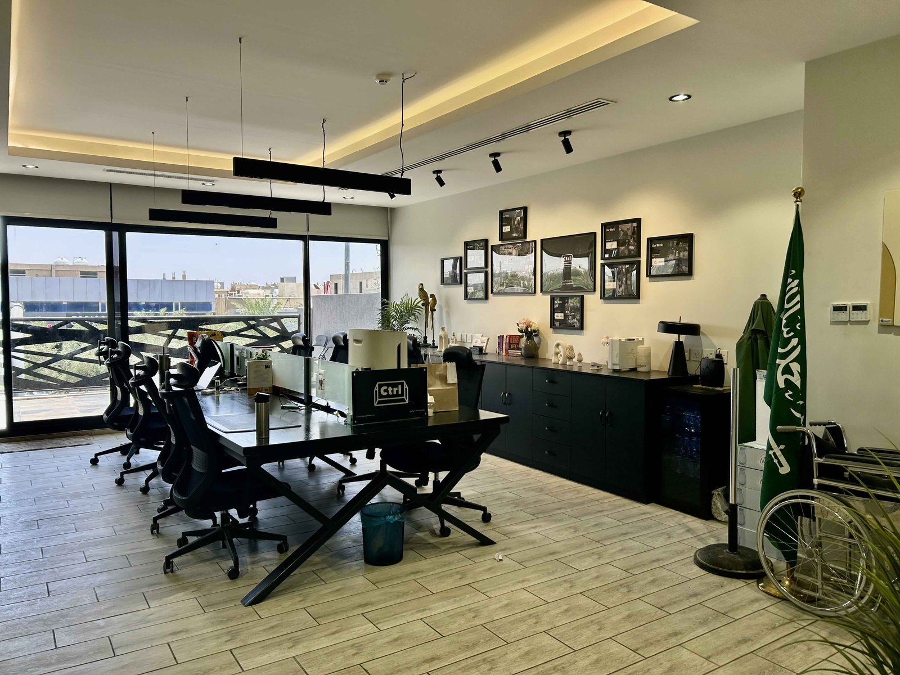
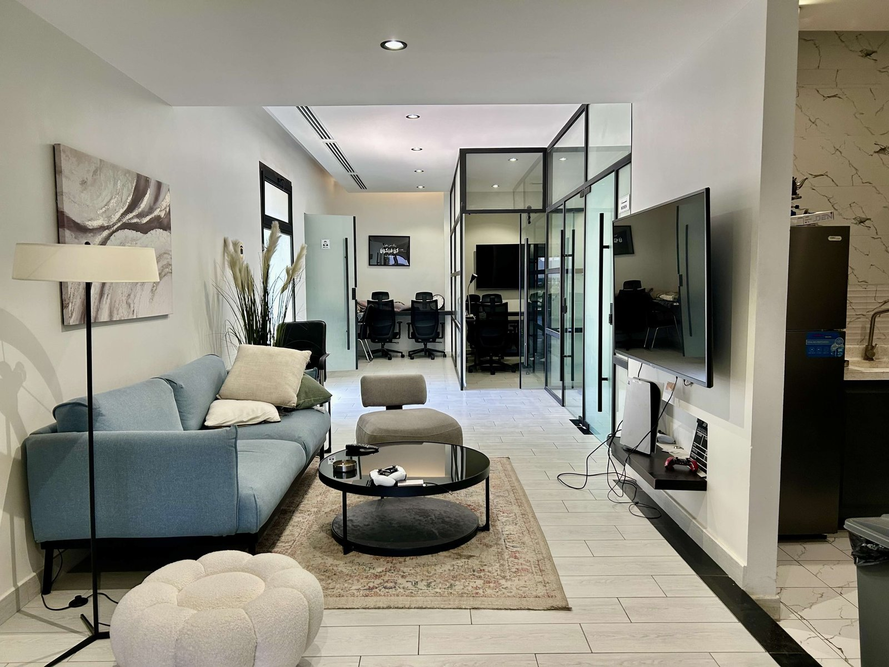
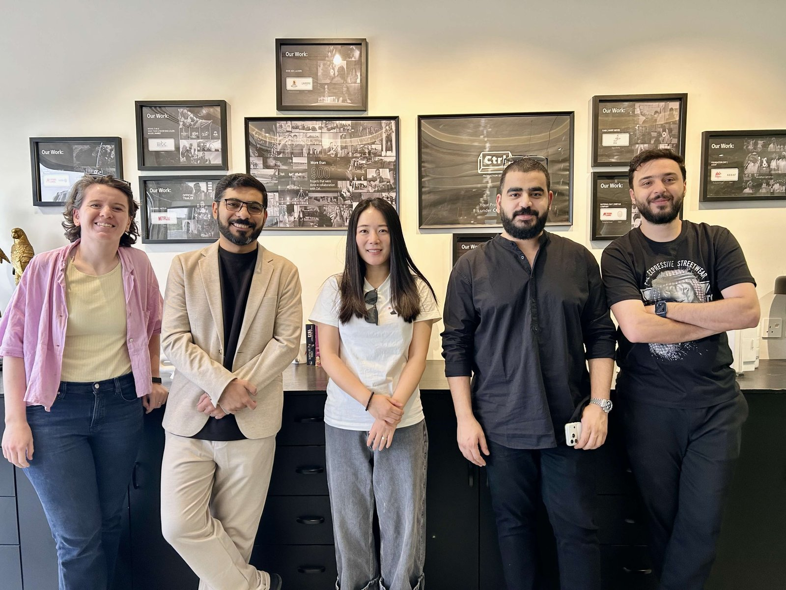
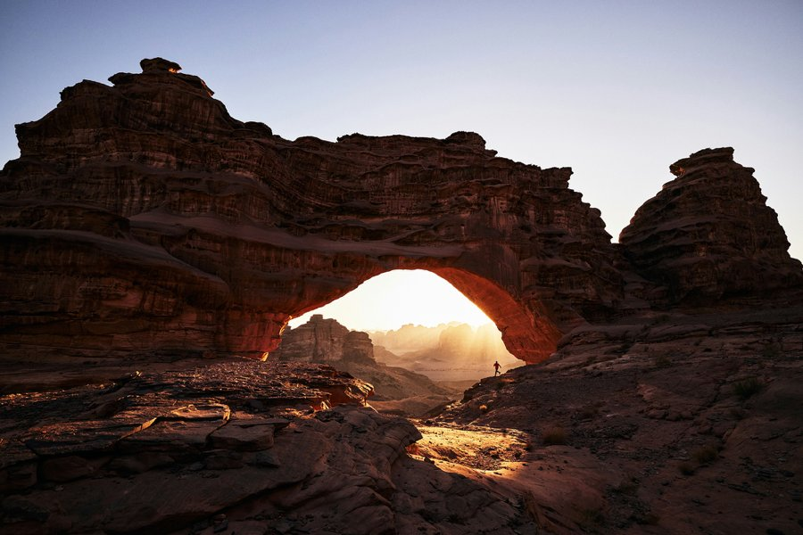
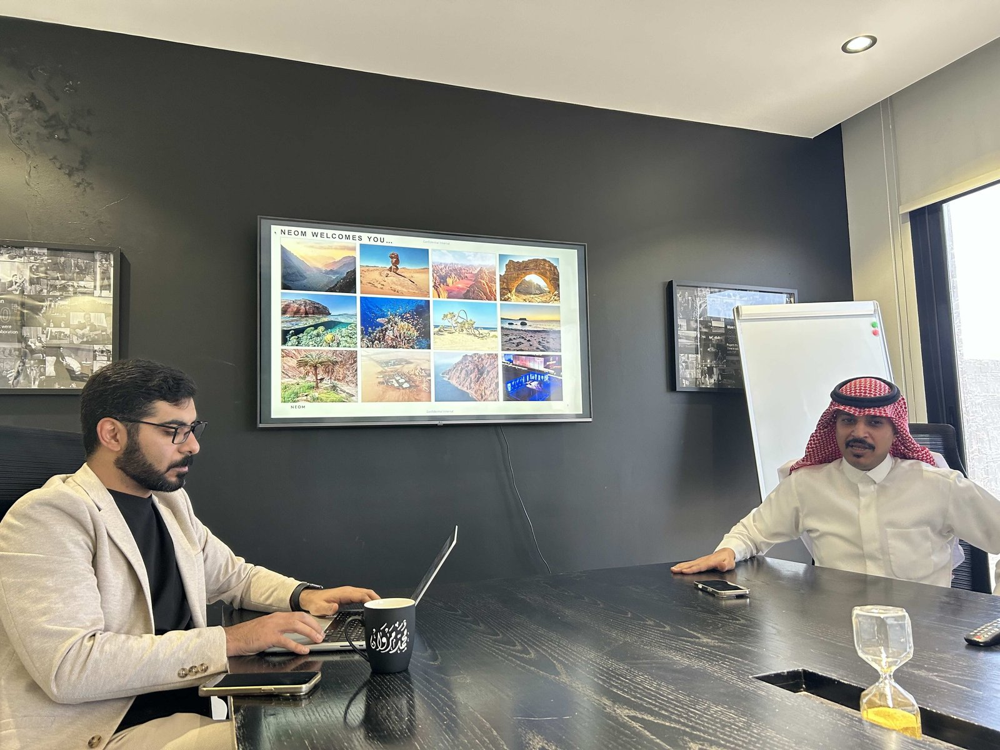

사우디아라비아가 해외 콘텐츠 제작 유치를 본격화하는 가운데, 한국 영화·드라마 제작사와의 협력 확대에도 적극적으로 나서고 있다. 통신원은 최근 리야드(Riyadh)에 위치한 시티알엘 프로덕션 서비스(CTRL Production Services)를 직접 방문해 관계자들과 미팅을 가졌다. 2019년 설립된 시티알엘은 사우디아라비아 최초의 프로덕션 서비스 전문 회사로, 국제 영화·드라마·광고 제작에 필요한 로케이션 헌팅, 촬영 허가, 현지 크루 및 장비 수급, 제작 물류 등을 종합 지원한다. 2024년 6월에는 사우디 필름 커미션(Saudi Film Commission)과 공식 파트너십 계약을 체결해 인센티브 프로그램 운영을 위한 공식 실행 파트너로 지정됐다.


시티알엘(CTRL) 프로덕션 서비스 오피스 내부 — 출처: 통신원 촬영
한국 영화·드라마와의 협력 강화에 나선 사우디
시티알엘이 지원한 주요 프로젝트는 다음과 같다. 엠비시(MBC) 스튜디오, 에이지시(AGC) 스튜디오, 제이비(JB) 픽처스, 스튜디오 메커니컬(Studio Mechanical)이 공동 제작한 대규모 역사 서사극 〈데저트 워리어(Desert Warrior)〉는 사우디 북서부 네옴(NEOM) 및 타부크 전역에서 촬영됐으며, 버티컬 엔터테인먼트(Vertical Entertainment)가 국제 배급을 맡았다. 제라드 버틀러(Gerard Butler)의 제작사 지베이스(G-BASE)와 엠비시 스튜디오, 썬더 로드 픽처스(Thunder Road Pictures), 캡스톤 스튜디오(Capstone Studios)가 함께한 〈칸다하르(Kandahar)〉, 볼리우드 장편 〈던킨(Dunkin)〉, 아마존(Amazon) MGM 및 F1 관련 제작물도 포함된다. 또한 리야드에서 개최된 사우디 필름 콘펙스(Saudi Film Confex)에서는 배우 조니 뎁(Johnny Depp)의 기조 세션 운영도 지원했다.
이번 미팅에는 시티알엘 측에서 제너럴 매니저 모하메드 마르완(Mohammed Marwan), 프로젝트 디렉터 압둘마지드 알-샴마리(Abdulmajeed Al-Shammari), 오퍼레이션 매니저 란드 토후즈(Rand Tghouj), 프로덕션 매니저 하젬 알 알리(Hazem Al Ali)와 아흐메드 자이타위(Ahmed Zaitawi)가 참석했다. 시티알엘은 한국 콘텐츠의 글로벌 경쟁력과 제작 역량에 높은 관심을 표하며, 한국 영화·드라마 제작사를 위한 사우디의 제작 지원 프로그램과 협력 가능성을 소개했다.

왼쪽부터 란드 토후즈(Rand Tghouj) 오퍼레이션 매니저, 모하메드 마르완(Mohammed Marwan) 제너럴 매니저, 통신원, 하젬 알 알리(Hazem Al Ali)·아흐메드 자이타위(Ahmed Zaitawi) 프로덕션 매니저 — 출처: 통신원 촬영
무료 로케이션 투어와 현지 제작 지원
사우디 필름 커미션이 인센티브 프로그램의 일환으로 해외 제작사에 제공하는 대표 지원책은 무료 로케이션 투어(Location Tour)다. 시티알엘은 이 프로그램의 운영을 맡은 공식 실행 파트너로서 투어 전반을 실무 지원한다. 시나리오가 완성되고 제작 예산이 확정된 프로젝트라면 항공, 숙박, 현지 교통, 식사 등을 지원받아 사우디의 촬영 로케이션을 직접 답사할 수 있다. 관계자에 따르면 이 프로그램은 제작사가 촬영을 확정하기 전에 사우디의 촬영 환경을 미리 경험할 수 있도록 설계됐으며, 투어 이후 사우디에서 촬영하지 않기로 결정하더라도 별도의 페널티는 없다. 다만 실제로 촬영을 검토 중인 프로젝트를 대상으로 한다.
| 구분 | 내용 |
|---|---|
| 지원 대상 | 장편 영화, 드라마, 다큐멘터리, 애니메이션, 단편 영화 |
| 신청 요건 | 시나리오 완성 + 제작 예산 확정 |
| 최소 제작비 | 장편 영화 USD 200,000(약 2억 7,000만 원) · 다큐멘터리·애니메이션 USD 50,000(약 6,700만 원) · 단편 영화 추후 공지 |
| 지원 인원 | 프로젝트당 최대 18명 |
| 지원 내역 | 항공권, 숙박, 현지 교통, 식사 |
| 제작 지원 | 로케이션 제안, 스튜디오 연결, 촬영 허가, 장비·크루 수급, 제작 물류 |
| 지원 범위 | 프리 프로덕션~포스트 프로덕션 전 단계 / 걸프협력회의(GCC) 배급·판매 네트워크 연결 |
| 비자 비용 | 제작사 부담(안내 제공) |
| 기타 | 투어 후 촬영 불참 결정 시 페널티 없음 |
사우디아라비아 로케이션 투어 지원 개요 — 출처: 시티알엘(CTRL) 프로덕션 서비스 미팅, 통신원 정리
사우디 주요 촬영 로케이션
미팅에서 시티알엘은 사우디의 주요 촬영지를 다음과 같이 소개했다. 알울라(AlUla)는 웅장한 암석 지형과 광활한 사막 경관이 어우러진 유서 깊은 지역으로 역사 대서사극·판타지·어드벤처 장르에 적합하다. 헤그라(Hegra, 마다인 살레)는 사우디 최초의 유네스코 세계문화유산으로, 2,000년이 넘는 나바테아 왕국의 고분군이 남아 역사·시대물 제작에 최적의 무대를 제공한다. 네옴(NEOM)은 사막·산악·해안·미래적 경관이 공존해 SF·액션·현대물 장르에 적합하며, 리야드는 현대적 건축과 전통 시장이 공존하는 수도로 첨단 스튜디오와 인프라를 갖춰 도시 배경 서사와 스튜디오 기반 제작 모두에 활용할 수 있다. 홍해는 맑은 바다와 산호초, 청정 해변으로 유명해 해양 영상·리조트 배경·해안 스토리 제작에 뛰어난 환경을 제공한다.

네옴(NEOM)의 자연 경관 — 출처: 네옴시티 공식 웹사이트
시티알엘은 로케이션 제안 외에도 스튜디오 연결, 촬영 허가, 장비·크루 수급, 제작 물류 등 현장 제작 지원을 종합적으로 제공한다. 현재 연결 가능한 주요 스튜디오 및 시설로는 잭스×소니 스튜디오(JAX×Sony Studio), 네옴 미디어 시티(NEOM Media City), 알울라 미디어(AlUla Media), 알 하산 스튜디오 리야드(Al Hassan Studio, Riyadh), 버추얼 스튜디오(Virtual Studio) 등이 있다.

네옴(NEOM) 로케이션을 설명 중인 모하메드 마르완(Mohammed Marwan) 제너럴 매니저와 압둘마지드 알-샴마리(Abdulmajeed Al-Shammari) 프로젝트 디렉터 — 출처: 통신원 촬영
최대 60% 캐시 리베이트 — 현지 파트너십이 핵심
사우디에서 실제로 촬영을 진행하는 제작사는 다양한 인센티브를 받을 수 있다. 사우디 내에서 최소 5일 이상 촬영하고 전체 인력의 40% 이상을 현지 크루로 고용하는 경우 최대 60%의 캐시 리베이트를 신청할 수 있다. 사우디에서만 전체 프로젝트를 촬영할 필요는 없으며, 한국을 포함한 여러 나라에서 진행되는 작품과 공동 제작 프로젝트도 지원 대상에 포함된다. 단, 캐시 리베이트 신청은 반드시 사우디 내 등록 법인을 통해 이루어져야 하기 때문에 해외 제작사로서는 시티알엘과 같은 현지 프로덕션 서비스 회사와의 협력이 사실상 필수다. 이들 회사는 로케이션 헌팅과 촬영 허가뿐 아니라 스튜디오 조율, 장비·크루 수급, 행정 절차까지 담당하며 국제 제작사의 전방위적 현지 파트너 역할을 한다. 관계자에 따르면 장르 제한은 없으나 사막·해안·산악·현대 도시 등 사우디의 다양한 자연 경관을 적극 활용하는 작품이 선호되며, 종교적·정치적으로 민감한 소재를 다루는 프로젝트는 사전에 충분한 협의가 필요하다.
중동 프로덕션 허브로 자리매김하는 사우디
사우디아라비아는 국제 영화제 참가, 제작 인프라 확충, 촬영 인센티브 강화를 통해 글로벌 콘텐츠 제작 허브로서의 입지를 꾸준히 다져가고 있다. 이번 미팅을 통해 확인된 지원 체계는 로케이션 투어와 현지 제작 지원에서부터 스튜디오 접근성과 중동 시장 진출 경로까지 아우르는 종합 전략의 일환으로 읽힌다. 한국 영화·드라마 제작사들이 국제 공동 제작과 해외 로케이션 촬영을 점차 확대하는 가운데, 사우디아라비아는 촬영지이자 제작 파트너로서의 잠재력을 높여가고 있다. 현지 지원 시스템과 인센티브 활용에 열린 자세로 임하는 한국 제작사들에게 사우디아라비아는 주목할 만한 새로운 선택지가 될 수 있다.
사진출처 및 참고자료
— 통신원 촬영
— 시티알엘(CTRL) 프로덕션, ctrl.film
— 필름 사우디 인센티브 프로그램(Film Saudi Incentive Program), film.sa/incentive-programs
— 네옴시티(NEOM City), neom.com